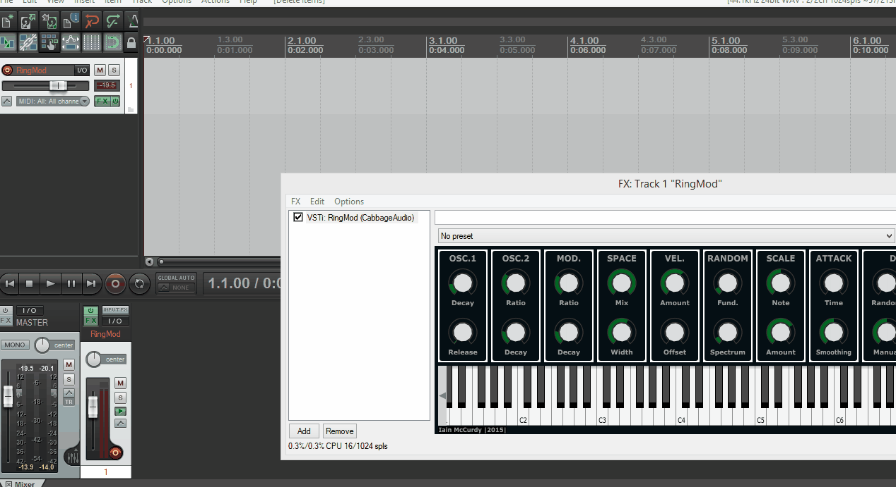

Using Cabbage plugins in 3rd Party audio software
After Cabbage plugins have been exported they can be used in any number of audio hosts that support the VST plugin format. Although each host is different, the following steps are usually required in each before you can use your export Cabbage plugins. The gifs in the following pages all show Reaper as the host audio software. You will need to refer to your own host documentation for further information on the following.
Setting your plugin location
Most hosts offer users the option of setting custom plugin locations. You should add the location of your exported Cabbage plugin. After you have added the file location, you should update and rescan the plugins folders so the host can find yours.

Using the plugin
To use the plugin you will need to add a new plugin to your track. You should again consult your host software documentation for this. In Reaper users can just right-click the track panel and insert a plugin from there.

Playing plugin instruments
You can play a plugin instrument with a MIDI keyboard, or by using the host sequencing capabilities. Most host's offer some type of piano roll interface that let's you manually insert notes to a track. All the notes placed here can be fed to your Cabbage plugin.

Add automation to parameters
The best thing about using plugins in audio hosts is the control they provide over parameters. Through the use of automation curves, you can use your host to control all the parameters of your synth. In Reaper, each track has a track envelope/automation icon that will bring up a list of parameters that can be controlled by the host. This list will contain all the channels declared in your Cabbage plugin.
Once you have selected a parameter you can then draw an envelope for it to follow over time.